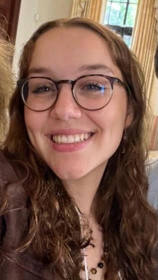
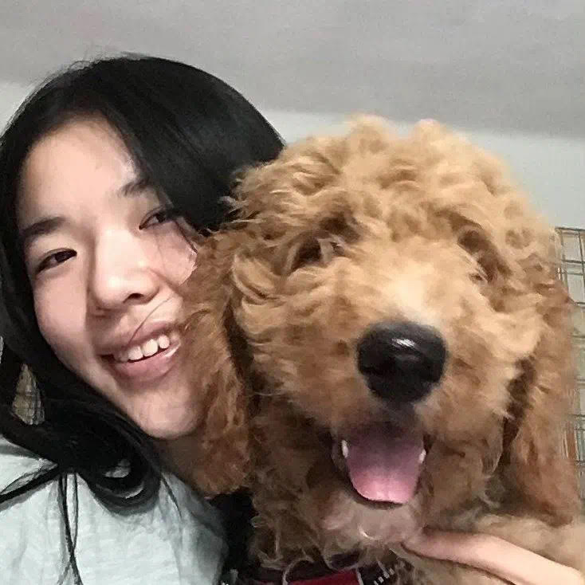

LHS Senior Seminar 2023
About The Panel
In this panel, members of LHS’s graduated class of 2023 shared what they had done and what they wished they would’ve done differently during their time at LHS. Through this diverse cast of experiences, we hope you will get to know our panelists and listen to the many perspectives and pieces of advice they have.
About Our Panelists
[show/hide]

Audi Lin
I’m Audi, a rising first-year studying computer science at Carnegie Mellon University. Throughout my time at Lexington High School,
I held leadership positions within LHS’s swim team, the Parity Bits(one of LHS’s robotics teams), and the LHS School Store. In my
free time, I enjoy creating and trying new things!

Eli Olcott
Hi! My name is Eli Olcott. I recently graduated from LHS and I’m an incoming freshman at Harvard planning on doing computer science
and philosophy. I was Captain of the Lexington Soccer Team, got on the U.S. National Futsal Team, was part of Lex STEM Youth Group,
created my own custom newsletter and video game (which got banned by the school), I liked Barbie’s soundtrack a little too much, and
I have recently gotten into rock climbing.

Ellen Wang
Hi, my name is Ellen Wang. I recently graduated Lexington High School, where I served as editor-in-chief of the school newspaper and
class officer. I am on the US International fencing team and a rising freshman at Stanford University.
Jaime Yu
Hi people! I’m Jaime, a rising freshman at Stanford who loves all things engineering and earth science. I am the former captain of various
STEM clubs at LHS (envirothon, science olympiad, ocean sciences bowl), student researcher, and past team member and current mentor of the
US Earth Science Olympiad Team. I spend nearly all of my free time outside from hiking, climbing and running to building random shenanigans.

Lotem Loeb
Hi! I’m Lotem and am thoroughly experienced with LPS in the realms of academics, visual arts, civic action, extracurriculars, and community
service. I enjoy reading, immersing myself in nature, and listening to all types of music; and doing all three is my favorite!

Pria Sawhney
Hi! My name is Pria, I’m a rising freshman at MIT planning to study chemical engineering. At LHS, I was a club captain for FIRST Tech Challenge
team 4029 and a captain of the National Ocean Sciences Bowl team.

Jason Alexander
Hi, I'm Jason, I'm a rising freshman at UMass Amherst majoring in computer science and philosophy. Throughout my time at LHS, I had a lot of
fun exploring different career paths, looking for ways to combine my interests with my skills. In my free time, I like working out and playing
video games.

Isabel Li
Hi! I’m Isabel, a rising freshman at Harvard majoring in neuroscience. During my time at LHS I danced ballet, led cultural events/programs, and
explored neurobiology through the realms of civic impact and research. In my free time I like rewatching Ferris Bueller’s Day Off and losing at
board games.

Alicia Li
Hi everyone, I’m Alicia Li, an incoming freshman at MIT. At LHS, I was part of Math Team and LexMACS, along with being the student spokesperson
for Lexington in Conversation. I qualified for Math Prize For Girls 3x and have been researching and studying at MIT PRIMES for 5 years. In 2020,
I founded the organization Watch To Donate, with members from around the world, using technology to allow people to donate to charity for free.
In my free time, I love to dance!.
Panel Prompts
1. What were your high school activities and what were your extracurriculars throughout high school?
[show/hide]
Alicia: Hi, everyone. I'm Alicia Li. I'm an incoming student at MIT. So in high school, I mostly
did a lot of math and computer science stuff. So the biggest thing I did was MIT Primes,
which is a research program. So I did adversarial reinforcement learning research for two
years and then the year before that, I studied theory of computation. And then the two years
before that, I did recreational math research all at MIT primes. Outside of primes. I also
founded a nonprofit called Watch to Donate. And we essentially provided people ways to
donate to charity for free. So we did this by developing two mobile apps where people can
play games and
then the revenue is donated. I'm really combining my passion for computer science and
technology to help others. Outside of that I was also involved in Lexington
Conversation, which aims to diversify our school curriculum, as well as I
danced for 15 years and I was part of the math team and also Lex MACS, which is the math
and computer science club.
Audi: Hi, I am Audi. My main activities in high school are robotics and swimming. For
swimming I did for many, many years, like 15 years-ish. For robotics I picked up in middle
school and continued to follow that throughout high school. I also did a lot of other clubs: like.
school store, debate, band, frisbee, and softball. Outside of school. I did mostly swimming and
a decent amount of tutoring and teaching. Over the summers, I intended to do more summer
camps instead of research..
Ellen: Hi, my name is Ellen. I'm a rising freshman at Stanford University. I have been on
the US National Junior and Cadet fencing team and represented the US to compete in
many countries for the sport. I served as editor in chief of the LHS
school newspaper - the Musket and was also elected for three years as one of the four class
officers of the LHS class of 2023 Student Council. I'm also part of the Lexington Youth STEAM
team, a writing teacher for middle school students at a non-profit organization, and I have co-
authored academic research papers.
Eli: I'm an incoming freshman at Harvard. I plan on doing computer science and philosophy
and in high school, I played soccer a lot. That was a big thing that I did outside. I also coded
my video games. I created a custom newsletter and reached out to local newspapers here,
particularly the Lexington observer. I then created a Lex budget simulator which basically told
how much of your tax money was going to which things so I built the website for that.
And then on top of that, I also was the captain of the Lexington soccer team. And that was
kind of my main extracurriculars, and I've also done tutoring on the side and have hosted a
moderator issue discussion group. So those were kind of my main activities.
Isabel Li : Hi, I am Isabel and I am an incoming freshman in Harvard University in
Neuroscience. Most of my time outside of school is at Ballet. I competed in Youth American
Grand Prix, universal ballet competition etc. and qualified as a finalist. I think dance was an
activity that was closest to my heart just because I just love the community so much.
I also found it a pen pal club and ran my own business where I taught English to kids in China.
I published biochemistry research, volunteered in simulated organizations and shadowed
interns during the summers.
I was also co-president of the youth against Alzheimer's club and on the side I ran a
baking fundraiser with friends and won gold at our regional competition.
Jamie: Hi, people. My name is Jamie. I am also an incoming freshman at Stanford this year
along with Ellen, and like Ellen I spent some of my high school fencing although not
nearly as much as she did. And in high school. I was the co-captain of Science Olympiad,
which is a science club and also a co-captain of the National Ocean Sciences bowl along with
Pria here, and Envirothon. I did a lot of school science clubs, mostly in the fields of earth
science as well as engineering so I did a lot of building things and a lot of talking about Earth.
And in Envirothon, I spent a lot of time talking with the Town legislature about town budgets,
etc.
I did some research for a while on ocean thermal energy conversion. I was also part of the
United States Earth Science team and competed internationally in 2021. And since then, I've
been a mentor at the team. And in my free time I do spend a lot of time outside. I spend a lot
of time hiking, running etc.
Jason: Hey, I'm Jason. I am planning to go to UMass Amherst for computer science and
philosophy. I guess my biggest thing that I did during high school was that I participated in a
summer project at Microsoft working for a car manufacturing company using augmented reality
with AI visuals like detection of text as well as finding machine manuals on factory
floors to improve worker safety.
After that, I also worked a little bit on making up a book but I didn't finish it in time. But I was
working on a book for the consequence, this of like the AI explosion we see right now and like
the ethical implications that in society so I was working on that. On the side. I did a lot of
tutoring at different places. I taught tennis for like five years. I also did piano and
then I volunteered at some clubs in school. I volunteered in a club where we like revamped the
LHS school website. So that was pretty fun.
Lotem: Hi, everyone. I'm Lotem. I'm also a rising first year at Harvard. Throughout high
school, I attempted to be involved in a range of extracurriculars that shifted throughout my four
years, which mirrored and also in birth, my personal development. I forgot to mention that I'm
planning on studying psychology and biology. My biggest activities were project 851, which is
actually outside of LHS. It's a youth service organization which encourages eighth graders
across Massachusetts to learn to serve in their communities. I started off in eighth grade.
And then throughout my four years in high school, I assumed different mentorship and
leadership roles. I also worked for, or I volunteered for a Russian School of Math mentorship
program, which works with elementary school students. And then I became the Executive
Chair for that for two years. During the summers I mostly focused on volunteering at camps
and doing a lot of photography activities. I also was in a bunch of clubs at LHS including folio,
the art magazine where I was an art editor. I was a leader for the senior pen pals club, and I
had a few other things and I started off by playing soccer on the JV girls’ team. But I decided
during the pandemic that that wasn't really for me. Throughout my high school career, I
assumed different roles in different clubs and was mostly using it as a way to feel comfortable
in my extracurricular skin, my academic skin and also just for myself.
Priya: Hi, my name is Priya. I'm an incoming freshman at MIT along with Alicia. So going into
high school, one of my biggest things was showjumping. I rode horses competitively for
almost 13 years of my life. So that was one of the biggest things I did. Along with that I also
worked at my barn so I was teaching younger students and I also volunteered at a local
therapeutic riding facility. And then going into high school, I continued with science bowl. I
kept mentoring the local middle school diamond Science Bowl team. And I also started a
National Oceanic Science Bowl, which I ended up being a co-captain along with
Jamie, but instead of earth science, I was studying marine biology. And then in COVID, riding
kind of stopped for me, and I picked up robotics and I ended up being a club co-
captain for one of LHS robotics teams for 292 Bits to Byte and so on that I competed in
FTC (FIRST Tech Challenge). Throughout my summers, my first summers were primarily more
summer camps teaching for local math camps. I got my sailing certification, stuff like that. And
then as I got older, I spent one summer working in a corporate lab, doing kind of biomedical
chemical engineering research and then my last summer working at a Harvard MIT affiliated
kind of biotech lab that was more academic and less corporate.
2. How did you determine which activities you actually wanted to proceed? Obviously, at LHS, there are numerous activities and a bunch of opportunities in and around the communities. So how did you choose which ones you wanted to go with?
[show/hide]
Alicia: So I've always been a math girl, like math has just been my favorite subject. And I think
math is a good foundation to have if you're pursuing any field of STEM, which is why I focused a
lot on Math competitions. I did like AIME five times and Math Prize for Girls three times, which I
highly recommend applying for, and then I wanted to branch off into research just to see what it was
like. So that's why I did MIT primes. And I founded my nonprofit Watch to Donate in the summer before
sophomore year, just as like, I don't know, I just wanted to do something because it started off as
just a YouTube channel in which we like to make videos and then the revenue is donated to charity.
And I just wanted to do something because there were just so many issues back then. And there still
are a lot of issues now. And as a student I felt like I couldn't really do anything about it. So
making videos was just the way that I knew how to do and then making apps as well. And then outside
of that I have been dancing for 15 years. I love it so much.
Audi: In school stuff, I mostly chose to take the harder STEM courses. One of the things I ended up
regretting was taking a course in humanities that was really challenging for me. I took it because I
thought I had to. For senior year, I ended up taking the courses that I wanted to take even if there
weren't many people I knew taking. That was sort of school wise. Extracurricular wise I ended up sticking
with swimming because I was pretty good at it, and I had made a lot of pretty good friends. Even though
I joined a lot of clubs in freshman year, which I do recommend, I ended up sticking with robotics and met
a lot of really close friends that I would spend hours every single week with. And also, one thing I enjoyed
a lot was community service and I ended up tutoring in English and computer science. And that was a way for
me to not only help my community but also in a way I learned a lot by teaching other people.
Ellen: I always loved reading and writing since I was young, and my freshman English teacher happened to
be the club advisor for the school newspaper. In my sophomore year, I joined the Musket as staff writer.
Through my involvement in this club, I found inspiration to teach writing classes to young female students.
This mentoring process ignited a deeper interest in research and academic writing. As for my unexpected
journey into student government, it all began as a random idea to run for an election. I decided to give
it a try this. To my surprise, I found great enjoyment in serving on the Class Council board and contributing
to the planning of events for the Class 2023. My journey in fencing began at the age of eight and a half when
I decided to try out a lesson. It was quite a random choice, considering I was already involved in other sports.
However, from that very first encounter with fencing, I was hooked, and my passion for it has only grown stronger
ever since.
Eli: So in my experience, I have found the best way to find which activities you actually want to pursue is by
casting a wide net. So trying a bunch of stuff out and then kind of narrowing down from the things that you really
enjoy and kind of the aspects that you really like. So, from a young age, I kind of realized that I really enjoyed
problem solving. And I remember there was this one Christmas break, it was in like seventh to eighth grade, when,
you know, I was looking up on YouTube and I found some cool coding videos and I was just like, oh, this is awesome.
Isabel: I definitely agree with Eli that casting a wide net it's a really great way to find out what you like to do.
Going into high school I basically just did dance and didn't have any idea of what I liked. My freshman year I'm
like Audi. I was not prepared and I didn't sign up for any clubs. I joined two clubs in the middle of the year. But
yeah, so that first half of the year, I didn't do anything and I didn't really do anything to help me explore. But I
think just the second half of freshman year and then going into sophomore year, I explore different things. And I
figured out that I liked dance, Chinese culture and science. And so not only did I pursue these interests separately,
I also explored them in combination. For example, I wrote a paper on the science behind dance and another time, I helped
put together a dance performance for a Chinese cultural night so even though I liked a lot of things, I kind of managed
to see how they work together. And my other pursuits kind of history and baking were mainly just for fun and I think they
were also part of my exploration.
Jamie: I totally echo what everybody here has said which is to try everything. But then a big question is how do I try
everything? Like there's so much stuff. Do I even know what to try? Or how do I even know that there are things to try
and what I found super useful is listening to your friends and especially old school friends like when I went into high
school a lot of the clubs I tried, because my coaches in middle school, these were the clubs they did and they thought
it was awesome to be, like Jim, you should try this is a chill. I'll try and they ended up falling in love with it. Another
thing is just because you don't like it the first time doesn't mean that you can't try it again. Like I always thought Earth
Science was super dumb. It's like, you're learning about rocks. But now like that's all they do every day is I learned
about rocks, which like there's an interesting side to everything. And it's partly what you're good at. Right, people
naturally like doing what you're good at but at the same time, like you can totally do things that you absolutely suck at
if you like, if you enjoy doing it. For example, today I just rode on a bike for an extremely long period of time and I'm
really bad at biking. My friend is so much faster but I had fun so I tried it. And lastly or not lastly, but another thing
is the community around you matters a lot. I tend to join clubs and communities where I really respect every individual
that I'm working with. Because I want to be surrounded by people who I can learn from, and I want to be like these people. I
want to surround myself with the people who I want to be. I think that's like a big part of everything that I chose to do.
Jason: Yeah, I completely agree on the idea of casting a wide net. So for me the reason why I like it all again, like
the reason why I eventually got to computer science is what I wanted to do and why I chose those activities in high school.
For the longest time and like elementary school and everything I loved writing so much I would write so many stories. I was
like a young kid, I tried publishing books, and none of them were, but it was just because I had a passion so that okay,
I'm going to be an author when I grow up. No, I decided in middle school, I'm not going to be an author. I'm going to be I
think I wanted to be a philosopher and then I realized I don't want to do that. I want to maybe make a little bit more money
and have more of a concrete impact on the world. So that's it, okay. Architecture Design, I can still have a sense of art
and I love the idea of people like walking into buildings and making stuff and so I went around. I went to a lot of different
colleges then with my parents because they were like, 'Okay, gotta start thinking about college,' right?
I had a call with one of my friends whose one of her family friends was an architect. And he tells me this horror story of his
college experience and talks about work life balance in architecture and design and all these things. And I was like, wait, this
doesn't seem sound for me. So now I'm left here. It's high school starting it's like, it's like the end of sophomore year, like
half of everyone else in the school already knows what they're doing. They have so many things. I have nothing. I'm sitting here
my entire trajectory is off, right? I swore when I was really young, I would never do computer science. And then I decided, well,
this I have to do it and then I would force myself to like it and I think was pretty successful. So I chose extracurriculars that
would set a reasonable timeline that I could catch up to a point where I could get into college I'm happy to go to. I started off
just trying to learn by myself and I tried to just work on things like teaching places and getting internships. But now that I'm
past that point, I'm trying to get back into seeing where my passions are going. I'm getting back into a double majoring in philosophy
and trying to write a book again, because I think eventually your passion does call when you come back to it. So even though I
stressed a lot about college and I felt really lost during it, I did struggle through that. I think in the end I picked a path that
was logical, but I still left myself room to eventually find my way back to who I was.
Lotem: I am trying to further echo what was already mentioned, because it really is very wise. We're speaking from four years of
experience here, all with different interpretations of the LHS and LPS curriculum and experience. Although we can mention some
of the ills that are associated with Lexington High School, there are also a lot of positives, which is a lot of it boils down
to exploration, and so many things being available to you.In the beginning of my high school, I was kind of in this echo chamber
of needing to do certain things. You need to commit yourself to something and then not give up or not change. And my freshman year
I didn't cast a very wide net. And I don't think that actually was terribly bad because it allowed me to have time to adjust to LHS.
And playing soccer allowed me to know some of the older students and to have their advice at hand. And then as I started to listen
to myself more especially through isolation with the pandemic and amble reflection. I was able to actually realize all of the
available opportunities at LHS and beyond. And this allowed me to dive deeper into community service. I also failed to mention
in my activities answer that I was a part of something called LHS Chat, which is a student and teacher run club, which facilitates
community conversations regarding race, racism and social justice. So as a facilitator, I also helped curate a lot of the meetings
and I also worked the job my junior and senior year, which for a lot of people is not entirely typical in Lexington, especially if
you're very committed to your academics, but I was trying to listen to myself in terms of what I needed if I needed to relax or I
needed to do more things because I was really passionate about community service, and about social justice or even about art and
I tried to focus less of what was best for my resume and more so what was best for myself, which also took a while.
Priya: I don't think I have the most insightful answer to this question. In terms of the activities, I pursued in high school,
they all tended to be kind of continuation of what I did in middle school. I think middle school was a big kind of exploratory
period for me, and I found that I really like stuff like hands-on building and engineering. That's why I pursued robotics. I’ve
been involved in it since I was in second grade. it's kind of all led up to that. Same thing with writing started when I was
super young, and fell in love with it and continued it. But I think high school for me was really less kind of finding new things
that I loved and more just like building on this journey that I've already been on for so long.
3. How did you take advantage of the resources at LHS or surrounding LHS?
[show/hide]
Alicia: For me, I think it was mostly like teachers, so I was always super engaged in all of my classes, especially
when I remember my freshman year English class. I participated a lot, had some interesting, wacky ideas. And my teacher
actually invited me to Lexington in Conversation because the director of that group was looking for people who really
liked reading, students who really liked reading. So yeah, definitely just be super engaged in your classes so you can
get those kinds of opportunities. And it's just like, it elevates your learning if you actually care about your classes
and try. And I guess another example is AP chemistry. I was super involved in always asking, Pria can attest to this.
I'm always asking the questions to try to stop my teacher. And from that I developed an interest in theoretical science.
I'm really just trying to get the most out of your classes and your teachers because they are there for you.
Audi: I definitely agree with Alicia. For me, connecting with a lot of teachers was important. It definitely helped me
through some tough times. Because many times if you're struggling with homework load, as I did, since I took a lot of
classes, teachers will help and you ask for extensions. And doing that helped me a lot to get through. You can always
ask for help. Even if you're like, oh, no one else is asking for an extension. You can always ask for an extension or
ask your teacher “can I talk with you about this test? I'm worried about this.” Really, anyone is willing to help you.
You just have to reach out first. As to activities, I think it's kind of hard, harder to get into different activities
as you go through high school because that's when everyone kind of starts choosing. But I felt in LHS for freshmen and
sophomores, there's always the activity fair so all the clubs will set up their little booths. And you can type email
into literally every single Google form that anyone has and you get free candy, and then they'll send you emails. And
even though you might think, oh, I have to commit to all because I signed up to. No, you do not have to. What you can
do is just sign up for clubs to maybe attend a few meetings. If you like it, then continue with it. And if you don't
then you can just say “unsubscribe”. That’s it. And even if you don't end up sticking with a club, you have met a lot
of people in your grade and it's overall very useful. That's my advice.
Ellen: there's a lot of great teachers at LHS like many of us have shared and these teachers are willing to help you.
But many times, you need to be proactive and build up the courage to go out of your way and sometimes ask for help.
There is a common misconception that seeking help may make you appear less intelligent, But I think that asking for
assistance is a really great way to develop interpersonal skills and can significantly contribute to your growth as
a student, and many teachers have office hours which are after school, you can drop by and just ask some questions or
get some clarification if you have problems. And I also think your parents are another resource that many people often
neglect or forget about. every family is different, but I think during my high school years, when I encountered
difficulties, I think opening up to my parents also helped me a lot and they gave me a lot of advice.
Eli: You know, looking back, I also personally think with LHS in particular, I did not do the best job of actually
taking full advantage of the resources that were provided to me other than soccer, which I absolutely loved. I didn't
join any clubs and I also don't think I took good enough advantage of the awesome resources that our teachers there
until my senior year, which I think personally is a little too late. That being said, I was able to like that I tend
to be a very entrepreneurial person. I like building my own things. And I was able to get in contact with a lot of
people in the Lexington community who loved helping people out. And that was a huge resource that I found to be very
useful. And I got in touch with a stem youth group, which was an awesome experience to actually get hands-on coding
experience. I was able to get in contact with Lexington Observer, which is a local newspaper, which I also thought
was an amazing experience and also gave me hands-on abilities to actually code projects for them and stuff like that.
I did some freelance web dev on the side. But I have found, you know, the biggest takeaways that I had, were if you
want to take advantage of what is already there, join clubs and find people that are excited about the same things
to you. And really take advantage of that. And if you want to build your own thing, you're going to have to be more
proactive and reach out to people to see if they are interested in what you're doing. Or if they have advice or things
like that people love thinking that they're helping other people. And so giving them the opportunity or joining them
is a great way to do that and also provide yourself with a lot of opportunities. So that has been my personal experience
at LHS, take advantage of teachers and stuff like that, ask them a lot of questions. I think that is a big regret of mine.
Looking back, I wish I did more.
Isabel: I was kind of like Eli, I did a lot of my own things.
I created my own projects. And I think kind of the hardest part of doing that is reaching out sometimes to cold emails,
sometimes you have to even ask a teacher and I know it sounds really scary, but like the worst thing they can say is no.
And plus, they're probably really honored that you sought them specifically. I kind of utilize my teachers a lot and
also my upper classmates. There were some things I wanted to do, you know, maybe my upperclassmen did something similar,
and I asked them about it, and I think everyone's really happy to help. I also think that teachers, there are some like,
for example, my APUSH teacher was the one that got me linked to the history competition. So there are small little, like,
resources that teachers have that you can ask.
Jamie: I think that in my opinion, the most important resource about attending school in Lexington and also about where
you place yourself in life in general, is once again the people that you can surround yourself with. And the best part
about Lexington is that there's such a strong community of people that really care about what they're doing, whether it
be from science to humanities, and, for example, I do a lot of science and there's a really, really strong both research
community and Olympiad community in Lexington and I found that these people are super helpful for introducing you to things
that they should try. For example, in ninth grade, my captain at that time was like, Yo, Jamie, you already know all this
random stuff, why don't you just try taking the earth science Olympia and I was like, why? What is this thing? And these
people can really introduce you to a lot of other things. And also, don't be afraid to ask the people who are older and
have already done it at once for help. If they don't have time, the worst that can happen is they tell you they don't have
the time. And lastly, make sure that you work with your friends. For example, I might be able to help you with physics or
math, but I suck at grammar and I might help my friends for like 30 minutes on physics, they might help me correct all the
misspelled words I have for a little bit so it's always like an hour long. An hour spent with your friends and helping them
it's never an hour lost but it's always fun and you build connections. And they're like resources that you can use in the
future.
Jason: Yeah, so before taking advantage of the resources at or surrounding LHS I think a really good rule of thumb that I
wish I had followed more is just, if a clear path doesn't present itself to you, you have to force a clear path for yourself.
Like I had an issue of like my idea of getting into colleges, I was taking a very linear process. I would do one thing that
would lead to another thing that would lead to another thing. I'm very slowly going but then I think looking back at it, I
realized that a lot of the people that succeeded found ways to jump ahead, perhaps they were just really smart already. Or
they already studied things for a while and when they were kids, right? But even if you feel that you have a disadvantage,
you're still able to put yourself out there and you're still able to leverage yourself.
Like this isn't necessarily about college, but I realized that after college that I need to do this, so I was like, Okay,
I don't know how my friends are getting research stuff. That seems impossible. I want to do that. I just emailed every
single faculty in the UMass Amherst campus for research stuff, and then I got a bunch of answers. I think it's just like
the same thing as in LHS where you really got to put yourself out there and if you feel like you're kind of done trying.
Like everyone else is doing so many impossibly cool things and you have no idea how they did it, a lot of them probably
just walked into it.
Or they found like really, you know, fortunate ways of getting into things like, a lot of what you're talking about, like
if you have certain teachers that like came up to you and offered you things or like you found teachers that inspired you.
If you don't feel that you're getting those same moments that are really inspiring you or giving you opportunities, it's
always possible to make those for yourself and LHS does a very good job of giving you those opportunities to go and put
yourself out there.
Lotem: As Jason and Jamie just mentioned, throughout high school, I tried to forge my own path instead of following the typical things, that are the typical expectations. So that meant not really listening to upperclassmen, instead, listening to my friends in terms of academics but not so much extracurriculars. Having or listening slowly and reluctantly to my parents, because they do have a lot of advice as well as teachers. And I think that Alicia mentioned this, but participation is very, very important. Although you might be really thinking about your social circle or who you need to meet or what activities you need to do, you are at LHS to receive a good quality education. So that means investing time in your academics and investing time in forging relationships with your teachers, as well as social relationships. I think that I didn't take enough advantage of the STEM opportunities at LHS just because everything is already so stem focused. And now I kind of regret that but I also had a very closed off social circle, which isn't necessarily bad. But that meant that I had to find a lot of my own opportunities, which I'm glad I did, because it allowed me to understand myself in a much deeper way. I think there's also a lot of wisdom embedded in LHS. Whether that's talking to upperclassmen, or your teachers or even just listening to what people say, but you need to listen in a very specific way. Because it's very easy to get caught up in the noise like, oh, everybody's doing this or I didn't get a good enough grade on this test. But you need to prioritize yourself and your well-being, and then finding what is best for you which is really hard. I'm not saying this. It took me four years and I still don't think so. I'll do it as well in college, but it's really just listening and learning and it's a continual.
Pria: So, I think I'm a bit different than some of the other people who give their answers first, when it comes to actual school and academics. I tended to kind of go on autopilot and I didn't really engage that much with faculty in terms of going to office hours and things like that. I will say the point that Lotem made about class participation just cannot be understated. Like you learned so much more though, if you're answering questions and you're talking to the kids at your table. I think I honestly personally understand topics best when I kind of sort of understand them and then try and explain it to somebody else. So really engaging with your table groups and stuff like that. Like there's a reason that your tables are like clumped together and like desks of five.
Other than that, I think echoing what Jamie said about really talking to your upperclassmen and people who are older than you. A lot of the clubs I joined ended up joining not only because I had experience with them, but I also was mentored by people who were current captains and things like that. And I think there's a lot to learn from people who are kind of going down the paths that you want to pursue in the future. Like I've talked a lot to people who you know, went on to become engineers and things like that or went on to, you know, attend colleges that I really, really wanted to go to. there's definitely a lot to be learned from the people and also LHS does have a lot of resources in terms of libraries and databases and things like that. And when it comes to college admissions, I don't know if the webinars are going there but like Naviance there's a lot of data there that you can learn from and it really helps you, you know, build your college list.